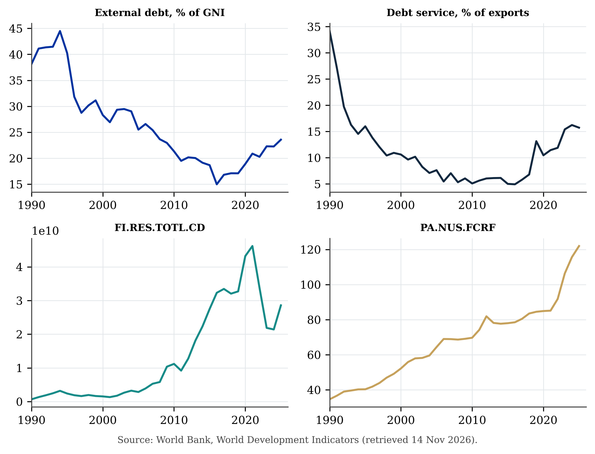
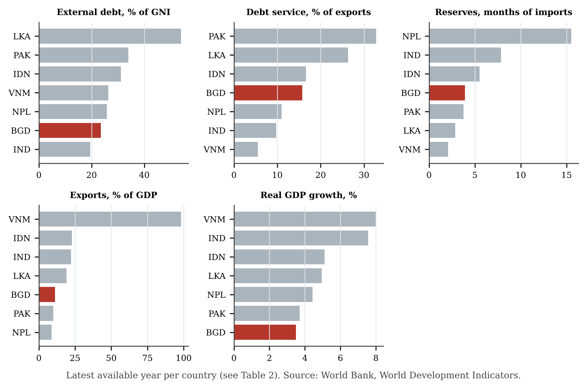
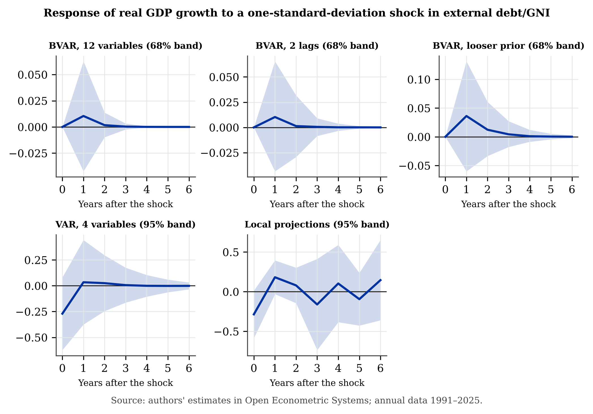

Tuhin G. M. Al Mamun · Statistical report · 2026-11-14
Cite as: Al Mamun, Tuhin G. M. (2026). External debt and debt service in Bangladesh. BIQEP Policy Briefs. Archived at https://doi.org/10.5281/zenodo.24215521.
Key findings
- Debt service, % of exports: Bangladesh 15.72 (2025), peer median 13.80; rank 4 of 7; change over ten years +10.72 (peer median +2.05).
- Reserves, months of imports: Bangladesh 3.91 (2025), peer median 4.63; rank 4 of 7; change over ten years -2.92 (peer median -0.41).
- Exports, % of GDP: Bangladesh 11.12 (2025), peer median 20.62; rank 5 of 7; change over ten years -6.22 (peer median +0.85).
- External debt, % of GNI: Bangladesh 23.57 (2025), peer median 28.74; rank 2 of 7; change over ten years +4.91 (peer median -1.19).
- Models: the response of real GDP growth to a shock in external debt/GNI is of the same sign across specifications; 0 of 5 bands exclude zero at the peak (Table 1).
1. Question
How fast has external debt service risen relative to exports, and what do debt shocks do to growth and reserves? We answer with official data, benchmarking against six regional peers and several estimators that make different assumptions; the results are reported whatever they show.
2. Data
Annual series from the World Bank World Development Indicators for Bangladesh, retrieved on 2026-11-14, years 1991–2025 (35 observations after transformation). The 12 variables are: Change in external debt/GNI (pp); Real GDP growth (%); Reserves growth (%); Change in debt service/exports (pp); Change in exports/GDP (pp); Change in imports/GDP (pp); Depreciation of the Taka (%); Change in FDI inflows/GDP (pp); CPI inflation (%); Change in investment/GDP (pp); Change in broad money/GDP (pp); Change in private credit/GDP (pp). Transformations: growth rates and percentage changes where the series is a level, first differences where it is a ratio.
Validation. Single compiled source for most series. Real GDP growth and CPI inflation were compared with the IMF DataMapper series for 2015–2025 (IMF: NGDP_RPCH, PCPIPCH); see the data-validation note in the Statistical report on inflation, the Taka and policy stance for the gaps found (up to 0.05 percentage points for GDP growth and 1.6 for inflation). Gaps in peer data are shown with the year used.
3. What the data show
Figure 1 plots four headline series. Figure 2 and Table 2 compare Bangladesh with six peers on the latest available year; rank 1 is best on the direction indicated.


| Indicator | Bangladesh (year) | Peer median | Rank (1 = best) | Ten-year change, Bangladesh | Ten-year change, peer median |
|---|---|---|---|---|---|
| External debt, % of GNI | 23.57 (2025) | 28.74 | 2 of 7 | +4.91 | -1.19 |
| Debt service, % of exports | 15.72 (2025) | 13.80 | 4 of 7 | +10.72 | +2.05 |
| Reserves, months of imports | 3.91 (2025) | 4.63 | 4 of 7 | -2.92 | -0.41 |
| Exports, % of GDP | 11.12 (2025) | 20.62 | 5 of 7 | -6.22 | +0.85 |
| Real GDP growth, % | 3.49 (2025) | 5.03 | 7 of 7 | -3.06 | +0.34 |
Table 2. Peer benchmarks. Peers: India, Pakistan, Sri Lanka, Viet Nam, Indonesia, Nepal.
4. Empirical strategy
We trace the response of real GDP growth to a shock in external debt/GNI. Models, all run in Open Econometric Systems: (i) a Bayesian VAR with a Minnesota prior on 12 variables (shock ordered first), with a variation in lag length and prior tightness; (ii) a four-variable VAR with a recursive ordering; (iii) local projections with Newey–West standard errors. The large system is possible only in the Bayesian model: an unrestricted VAR on 12 variables with two lags has 25 coefficients per equation for about 35 usable observations, leaving too few degrees of freedom for reliable estimates. Recursive identification is an assumption; the responses are dynamic correlations conditional on the ordering, not causal effects.
5. Results
Figure 3 shows the response to a one-standard-deviation shock (sd = 2.30, in the units of the shock series). The response one year after the shock is of the same sign across specifications. 0 of 5 bands exclude zero at the largest response (Table 1). The BVAR bands are 68% credible bands and the VAR and local-projection bands are 95%, so they should not be compared directly.

| Specification | Response after 1 year | Largest response | Band | Band excludes zero |
|---|---|---|---|---|
| BVAR, 12 variables | 0.01 | year 1: 0.01 | 68% | no |
| BVAR, 2 lags | 0.01 | year 1: 0.01 | 68% | no |
| BVAR, looser prior | 0.04 | year 1: 0.04 | 68% | no |
| VAR, 4 variables | 0.03 | year 1: 0.03 | 95% | no |
| Local projections | 0.18 | year 1: 0.18 | 95% | no |
Table 1. Response of real GDP growth to a shock in external debt/GNI.
6. Policy assessment
Where the record supports criticism
Bangladesh is more than 5% below the peer median, and its ten-year change is worse than the peer median change.
- Debt service, % of exports: Bangladesh 15.72 (2025), peer median 13.80; rank 4 of 7; change over ten years +10.72 (peer median +2.05).
- Reserves, months of imports: Bangladesh 3.91 (2025), peer median 4.63; rank 4 of 7; change over ten years -2.92 (peer median -0.41).
- Exports, % of GDP: Bangladesh 11.12 (2025), peer median 20.62; rank 5 of 7; change over ten years -6.22 (peer median +0.85).
- Real GDP growth, %: Bangladesh 3.49 (2025), peer median 5.03; rank 7 of 7; change over ten years -3.06 (peer median +0.34).
Where Bangladesh does well
- External debt, % of GNI: Bangladesh 23.57 (2025), peer median 28.74; rank 2 of 7; change over ten years +4.91 (peer median -1.19).
Where the evidence is not strong enough
- Dynamic effects: 0 of 5 impulse-response bands exclude zero, so the estimated effect of external debt/GNI on real GDP growth cannot be stated precisely with annual data.
Implications for discussion
Judgements drawn from the record, not estimates.
- Debt service as a share of exports is the sustainability indicator that moves fastest; it should be published with each debt statistical bulletin.
- Loan terms and currency composition determine how depreciation feeds into debt service and should be reported.
7. Limitations
- Annual data give about 35 observations; responses at one to six years are fragile.
- Recursive identification is an assumption, not a result.
- Peer comparisons use each country's latest year, which differs for some indicators; ten-year changes use the year ten years before the latest.
- Peer groups reflect economies of comparable region or size and are a choice; other groups could change ranks.
Data and replication
- data.csv (12 variables)
- results.json
- Figures at 300 dpi (PNG) and vector (SVG) in the same folder: fig1_stylised_facts, fig2_peer_comparison, fig3_impulse_responses.
Sources
- World Bank, World Development Indicators: api.worldbank.org, retrieved 2026-11-14.
- Models: Open Econometric Systems, github.com/tuhingm/open-econometric-systems.